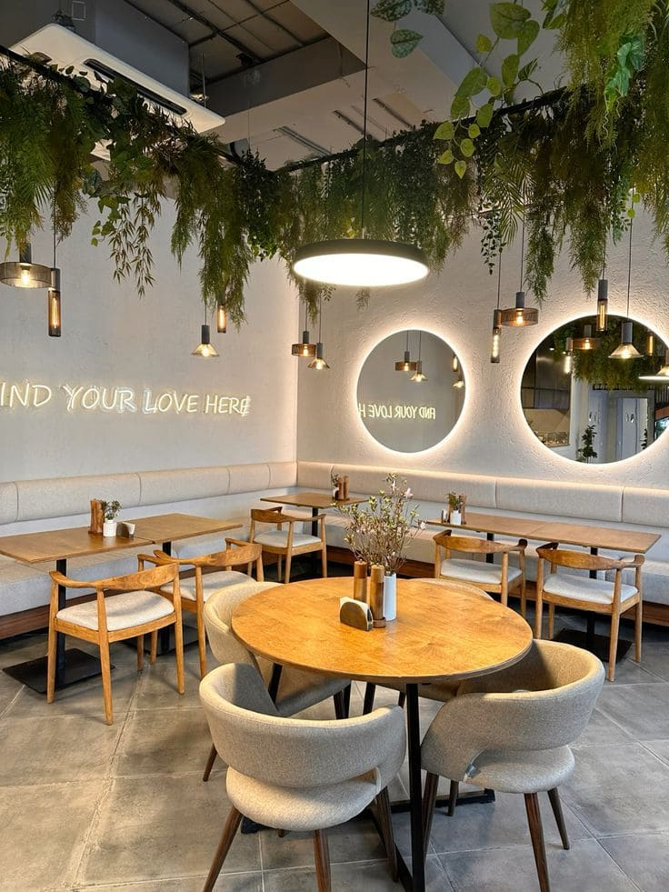

KPFF Kitchen
Restoran hangat dengan sajian comfort food, tempat ideal untuk makan malam santai, meeting ringan, dan reservasi keluarga.
Buat Reservasi
Lengkapi detail di bawah ini untuk melakukan reservasi meja Anda.

Restoran hangat dengan sajian comfort food, tempat ideal untuk makan malam santai, meeting ringan, dan reservasi keluarga.
Lengkapi detail di bawah ini untuk melakukan reservasi meja Anda.